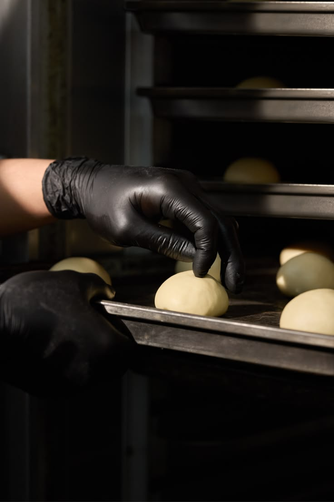

Galeri
Intip Dapur & Produk Kami
Lihat langsung proses pembuatan, produk terbaru, dan suasana dapur kami di Yogyakarta.

Produk Baru Bakpia Pandan Wangi
Varian terbaru dengan aroma daun pandan asli.


Suasana Dapur
Setiap box dipanggang bertahap, dikemas setelah matang DIJAMIN MANTAPPP.



Suara Proses Seduh
Dengarkan suasana saat menikmati bakpia ditengan ramai dan hangat nya Malioboro.